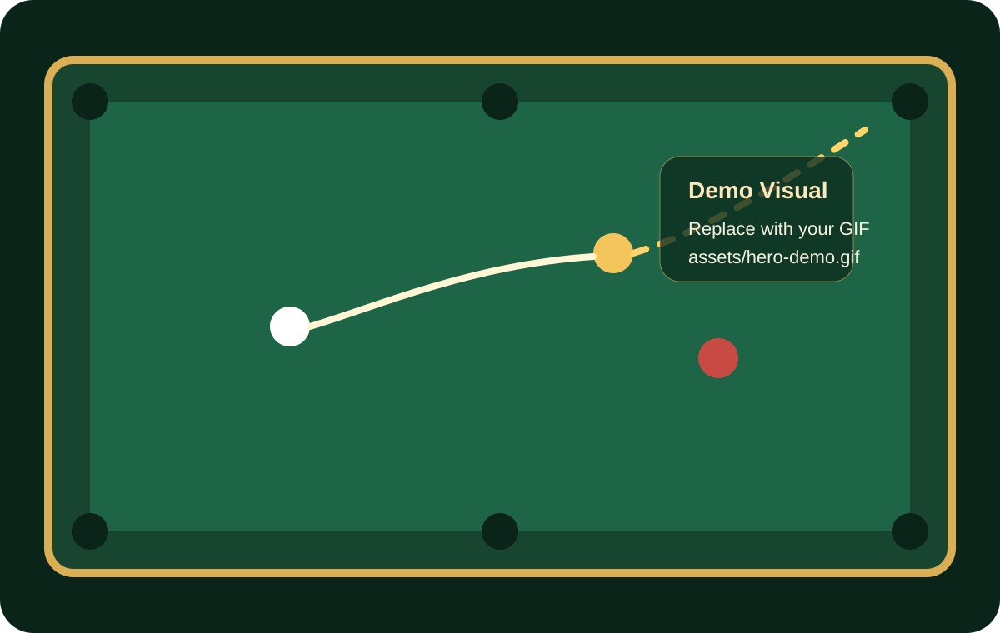
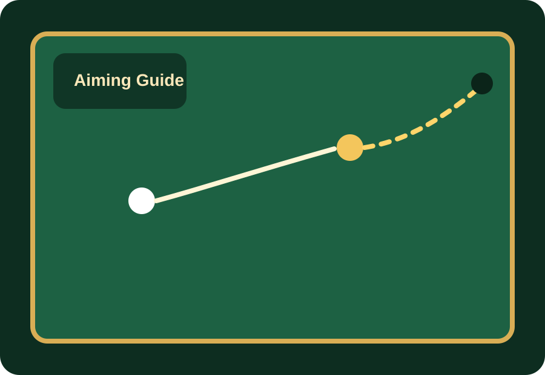
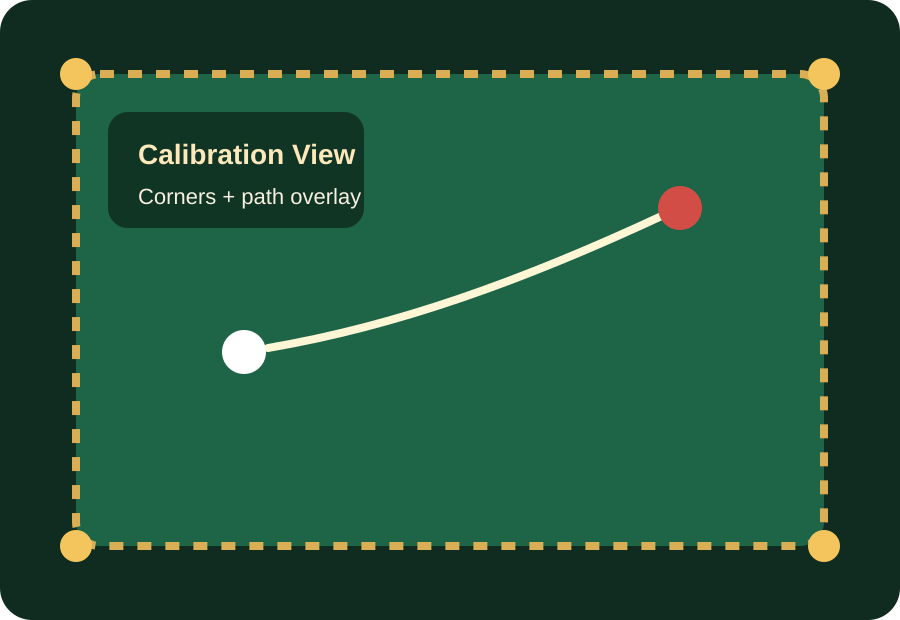
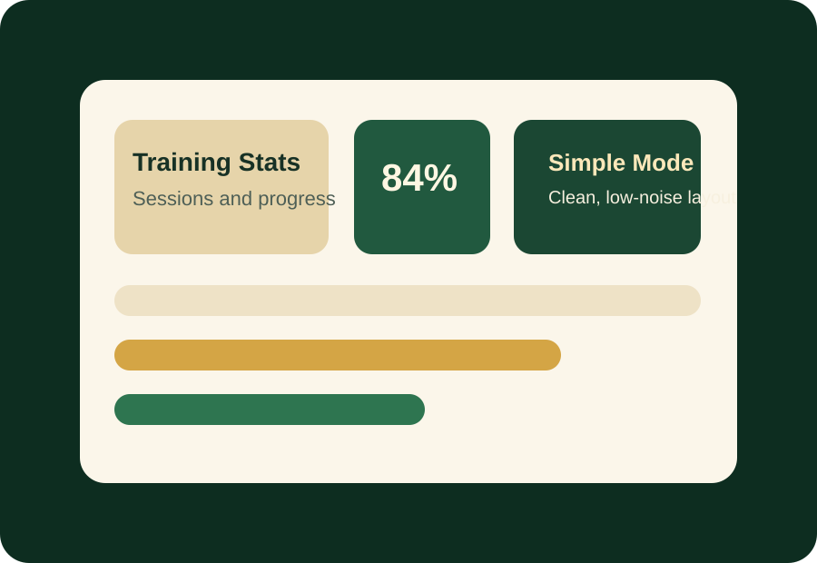

先完成球桌校准
确认球桌四角、边线和当前视角，后续辅助线和落点预测才会稳定。
Billiards Assistant Docs
这个页面专门为 GitHub 静态部署设计，支持中英文双切、图片/GIF 展示、搜索、目录定位和 FAQ 折叠，适合做成产品官网里的帮助文档首页。

Start Here
建议把新用户第一次打开软件最需要知道的步骤，固定放在页面最前面。
确认球桌四角、边线和当前视角，后续辅助线和落点预测才会稳定。
练习模式适合训练，演示模式适合讲解，简洁模式适合日常快速查看。
推荐把瞄准路线作为第一参考，把力度和走位提示作为补充信息。
Feature Guide
按用户真实使用顺序组织内容，比按技术模块分类更容易找到。
在画面中显示推荐击球方向，帮助用户快速确认进球线路。

显示目标球入袋方向、母球碰撞后的大致走向，以及可能落点区域。

支持记录练习结果，并在熟悉后切换到更简洁的显示界面，减少干扰。

Important Notes
这一部分最好单独强调，因为大部分“为什么不准”都能在这里提前解决。
最重要的提醒
如果用户反馈识别偏差、辅助线不准、落点异常，优先检查这三项，通常比改参数更有效。
只要球桌位置、镜头角度或设备摆放方式发生变化，就建议重新校准一次。
过暗、过曝、强反光或有人影遮挡时，都可能影响球体和袋口识别效果。
建议使用支架或固定机位，避免画面抖动和视角位移造成结果偏差。
线路、力度和走位属于辅助参考，真实效果还会受到杆法、球速、台呢和个人手感影响。
如果比赛、场馆或教学环境对辅助工具有限制，请以现场规则为准。
摄像头和存储权限未开启时，可能出现无法识别、无法截图或无法保存记录的问题。
Frequently Asked Questions
把用户最容易搜的词写进问题标题里，搜索体验会明显更好。
先检查是否完成球桌校准，再确认摄像头权限是否开启。如果当前模式设置为隐藏辅助，也会导致辅助线不显示。
最常见原因是校准不准确、设备角度变化或光线不稳定。建议重新校准，并保持摄像头位置固定后再测试。
请检查画面是否过暗、是否有强反光、球桌边缘是否完整进入画面。必要时可以拉远机位，确保桌面区域完整可见。
不是。力度建议更适合帮助用户建立感觉，不同球桌、台呢速度和个人发力方式都会让结果发生变化，建议结合实际击打调整。
可以先关闭其他后台应用，降低同时显示的辅助内容，或者切换到简洁显示模式。旧设备建议优先使用基础功能。
如果设备位置、角度和球桌环境没有变化，一般不需要每次都重新校准。但只要有明显移动，建议重新执行一次。
Visual Content
你后续把素材传到 GitHub 时，直接替换 `assets/` 里的对应文件名就可以。
建议使用 16:10 或 16:9 的软件演示图，或者一段 6-10 秒循环 GIF，放在 `assets/hero-demo.gif`。
每个核心功能建议至少配 1 张图，优先展示“开关前后”“辅助线效果”“校准界面”。
如果有典型报错、识别失败画面、权限弹窗，建议在 FAQ 下方加一张说明图，用户会更容易自助排查。
Deploy Tips
保持 `index.html`、`styles.css`、`script.js` 和 `assets/` 在同一层级，最适合 GitHub Pages 直接部署。
后续新增 JPG、PNG、WEBP 或 GIF 时，统一放进 `assets/`，页面路径管理会更清楚。
下一步可以继续加“更新日志”“下载说明”“联系我们”“版本差异”这几个模块。